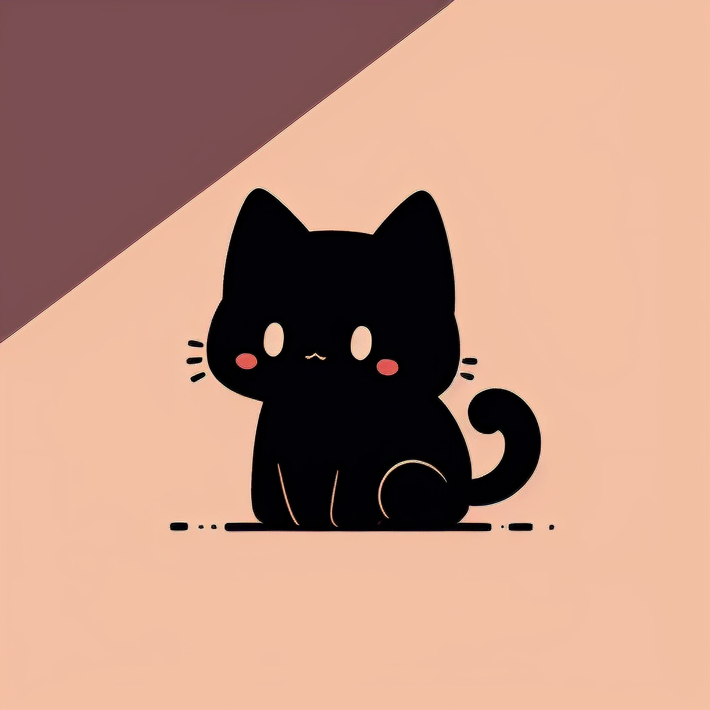
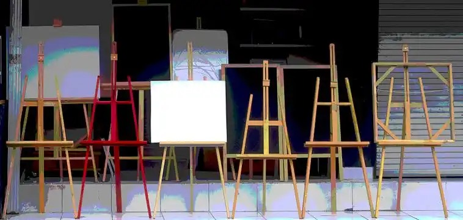
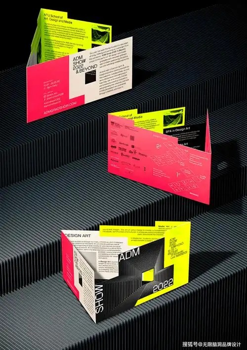
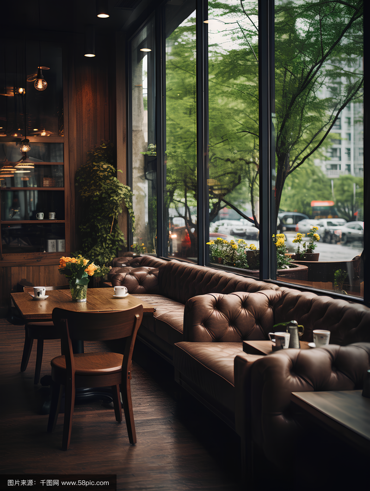

我是Purple，目前就读于浙江万里学院中德品牌学部，专业为艺术与科技中德2+2联合培养项目。在校期间，我同步学习国内艺术设计专业课程与德国前沿品牌设计、数字艺术相关内容，致力于将艺术审美与品牌实践相结合。
作为中德合作项目的一员，我在学习过程中不仅接触到国内设计教育的基础训练，也接轨欧洲现代品牌设计体系。这种跨文化的学习经历让我对设计有了更广阔的视角和更深入的思考。



课余时间，我喜欢探索城市中的独立咖啡馆与创意空间，观察不同品牌的视觉呈现方式，从生活细节中汲取设计灵感。摄影也是我日常记录生活的一种方式，用镜头捕捉光影与色彩的变化。
我也热衷于阅读设计类书籍和浏览国内外优秀的设计作品集，了解不同文化背景下的设计语言差异，这些都为我的专业学习提供了丰富的养分。